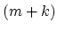
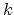
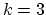
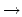

One of the earliest encrypting systems is attributed to Julius Caesar: if the letter to be encrypted is the -th letter in the alphabet, replace it with the -th where  is some fixed integer. Caesar used , or
a  d, as the key to the encryption. That is, ``a" would be encrypted to ``d", ``b" would be ``e", and so on until ``z" would be ``c". For example, for a k, the sentence ``this is a test" would become ``drsc sc k docd".
Now you have an encrypted sentence, and you know a decrypted word in that sentence. Your task is to find all the possible keys to the encryption.
The input starts with a line containing a number,  , followed by sets of encrypted sentence/decrypted word pairs. Each set has two lines, the first line is the encrypted sentence which contains only words separated by a space with no punctuation, the second line contains a word which is one of the decrypted word of the sentence above it. All words are in lowercase letters. You may assume a word is at most 16 characters long, and a line has no more than 70 characters.
, followed by sets of encrypted sentence/decrypted word pairs. Each set has two lines, the first line is the encrypted sentence which contains only words separated by a space with no punctuation, the second line contains a word which is one of the decrypted word of the sentence above it. All words are in lowercase letters. You may assume a word is at most 16 characters long, and a line has no more than 70 characters.
The output has lines of character(s), corresponding to the sets of encrypted sentence/decrypted word pairs. The line consists of lowercase letter(s) of possible key(s). That is, if the plaintext ``a" is encrypted to ``x", then ``x" would be in the line. Each line of characters must be sorted in alphabetical order.
2
drsc sc k docd
test
dl ruvd doha hp pz
we
k
hl